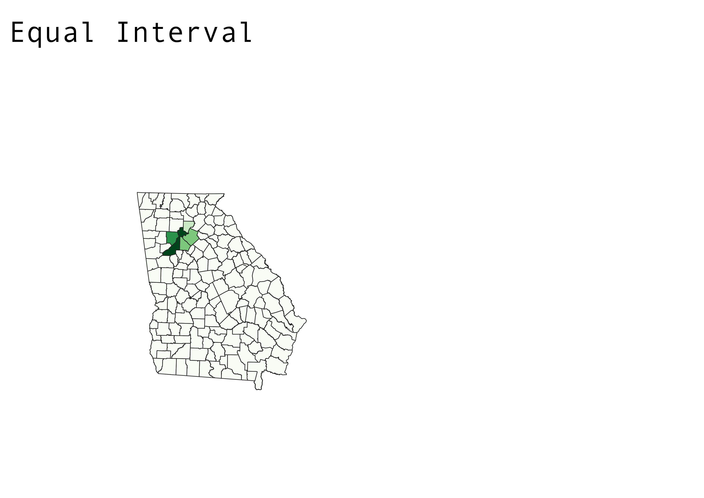
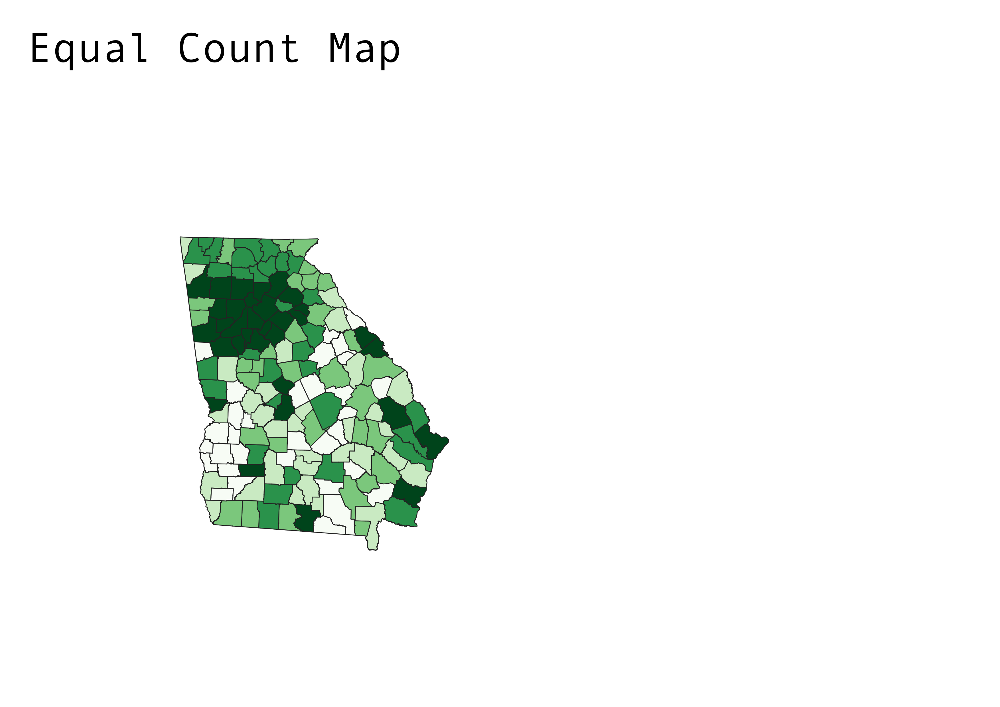

Pros & Cons of an Equal Interval Map
I used a ratio of 10 thousands just because it was easier to divide the data that way. The problem with that it makes it harder to find outliers.
Pros: It is very easy to interpret. Allows the Map to be Simplfied
Cons: It does not take into consideration how data is distrubted along a number line

Pros & Cons of an Equal Count Map
Pros: It represents everyone equally, but this can also be a con. Have to make sure data type fits the equal count in order to be a succesful map
Cons:It can create a group for outliers, therefore just by looking at the map you wouldn't be able to tell.

Pros & Con of Logarithmic Map
Pros:It is very easy to be able to compare data just by looking at the map. It can also cover large datasets.
Cons: Won't be able to find outliers easily.